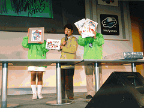
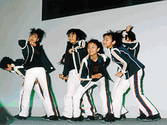

| ステージイベントも盛況、3日間で147,913人を迎え、無事終了 |
メインステージでは、恒例となったチャリティーオークションが開かれ、たくさんの品物がオークションにかけられました。また、最終日には、幅広い層で人気急上昇中のグループ・Folderが楽しいステージを披露。こうして「東京ゲームショウ'98
春」は3日間で過去最高の147,913人を集め、大盛況のうちに幕を閉じました。

▲チャリティーオークションの様子 |

▲Folderのステージ |
| 東京ゲームショウ来場者数 |
| TGS'98春 |
TGS'97秋 |
TGS'97春 |
TGS'96 |
| 3/20（金） |
18,606人
（特別招待日） |
9/5（金） |
14,365人
（特別招待日） |
4/4（金） |
19,203人
（特別招待日） |
8/22（木） |
28,733人
（一般公開日） |
| 3/21（土） |
76,212人
（32,000人） |
9/6（土） |
52,834人
（23,000人） |
4/5（土） |
48,365人 |
8/23（金） |
35,067人 |
| 3/22（日） |
53,095人
（35,000人） |
9/7（日） |
73,431人
（33,000人） |
4/6（日） |
53,604人 |
8/24（土） |
45,849人 |
| 合計 |
147,913人 |
合計 |
140,630人 |
合計 |
121,172人 |
合計 |
109,649人 |
※（ ）内は、開場待人数。'98春は午前9:30時点、'97秋は午前10:00時点。
・・・To Be Continued TOKYO GAME SHOW '98 AUTUMN |
|